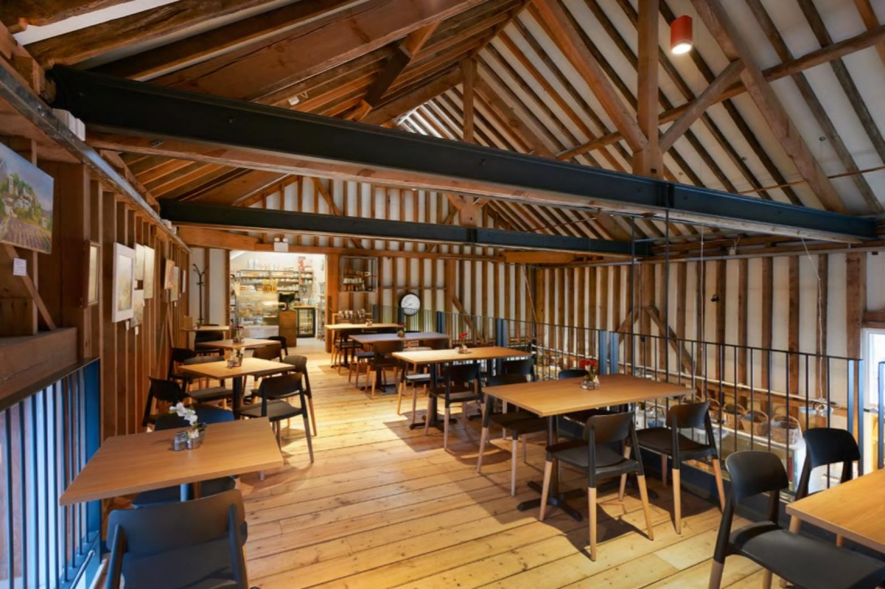

Quality Food fresh from the Marshall's kitchen
At Marshall's we take pride in serving great quality fresh food, using local ingredients as much as possible. Whether it is breakfast, lunch, kid's meals, coffees or cakes we have something for everyone! Our cakes in our cake cabinet are all homemade in house by our talented bakers - from iced Victoria sponge to biscoff tiffinx, chocolate krispie to lemon sponge! Have a browse of our menus attached below.